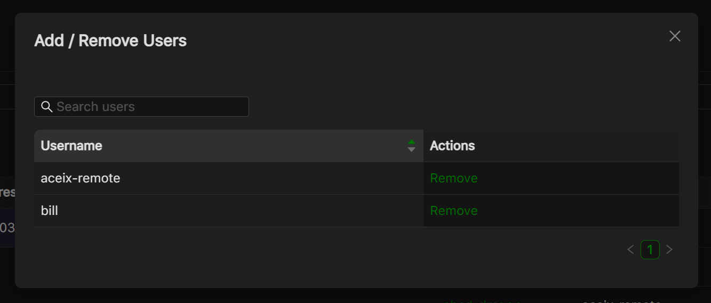

Users in Netmaker Professional¶
Netmaker Professional offers advanced user management features. The super admin can create users with either a user or admin role. Only Admins can access the dashboard, the normal users can use remote access client to join the network through a gateway. Admins can add users and assign them to remote access gateways, which includes managing the user’s access to different remote access gateways.
Here is a breakdown of the different user types and their permissions:
User: Users do not have access to the Netmaker dashboard. They can only use the remote access client to connect to a gateway.
Admin: They can create and manage users, networks, and gateways. They cannot create/manage other admins
Super Admin: Super admins have full access to Netmaker. They can create and manage users, admins, networks, and gateways. They can also manage user and admin permissions.
Adding users¶
To add a user, go to the Users section and click the Add User button. Fill in the user’s details, including their name, password, and role.
As a super admin, you can add users with the role of admin or user.
As an admin, you can only add users with the role of user.

The credentials will need to be shared with the added user.
Attaching or removing user from a remote access gateway¶
To attach users to a remote access gateway or remove users from a gateway, you will need to have the gateway set up. Once the remote access gateway is set up, you will see an option to attach or remove users from the gateway’s dropdown menu on the table row.

You can click the button to either attach or remove a user
{kind=link}
Transferring super admin rights¶
Super admin rights can be transferred only to another admin. To do this, on the users page, go to the superadmin row and hover over the ellipsis. You will see an option to transfer admin rights. On clicking it, a dialog box will open allowing you to select any admin to transfer super admin rights to.